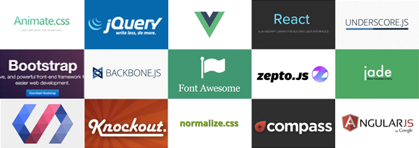

HTML / CSS / JS-JQ 学得差不多了，至少现在几大网站的首页是能仿下来。然后花了一天时间看了以后的路就蒙逼了。各种框架层出不穷，前端的速度真是太快，本还想停下歇息几天，现在感觉停下意味着死亡。只觉得时间不够，太多坑要填。这么多框架选哪个？

之前一直以为自己的精力是无限的，只要感觉来了就可以一直折腾下去，目前看来专精某一种才是王道。试着学了下 React，虚拟 Dom 好难受。最大的问题是如果以后的生产环境不是 React，怎么办？而且前端如此高速的迭代，怎么才能追上？ 只有拿命拼了……
沉下心来，与其盲目的选择，不如在原地先看看。我觉得还是应该先去把犀牛书再翻翻，这么多框架 JS 万变不离其中。好像也是没有办法的办法了～ 我要开始找工作了啊！却还只能原地踏步。 好纠结……
之前去看了魔兽首映，（一直很好奇 Warcraft 是怎么就翻译成魔兽了呢) 游戏改编一直觉得是坑，毕竟是商业行为，那是要赚钱的。就要照顾到没玩过的朋友们，原著的改编不可避免。玩家又是忠于原著的。两者调和下的四不像觉得两边都得罪了。这次符合暴雪个性一如既往的很多彩蛋，开场 Logo 就有守望的大屁股…… 以及我看过数量最多的开场片头 =。=～ 整体看下来一般吧，原著改了很多，故事很精简。最重要的是开场前先去 MC 继续刷风剑的半脑，上线竟然卡勒！看来挺多人来还愿的。怨念的是继续没掉，不知道剩余十来天的点卡够不够我刷出风剑……魔兽已经成了记忆的传承，超越的游戏本身。虽然资料片不断的续命，可玩家依然怀念的是那个 60 年代的故事，主要的还是 60 年代后面的回忆吧。唉 其他事不想说了 都是回忆。
放一只我们家的霜狼～ 萌萌哒 (,,• ₃ •,,